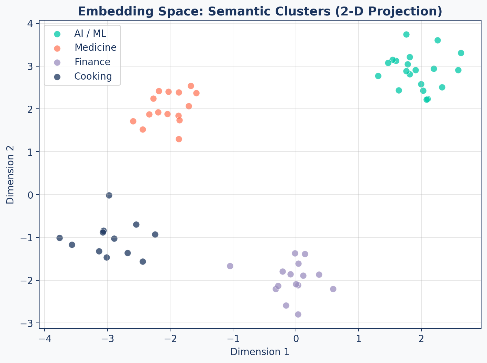
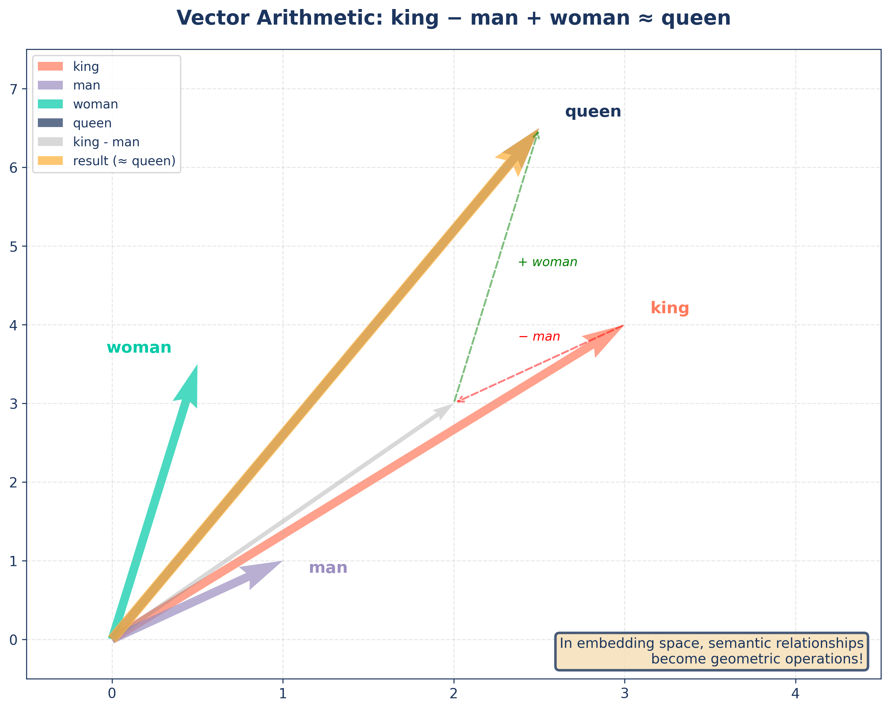
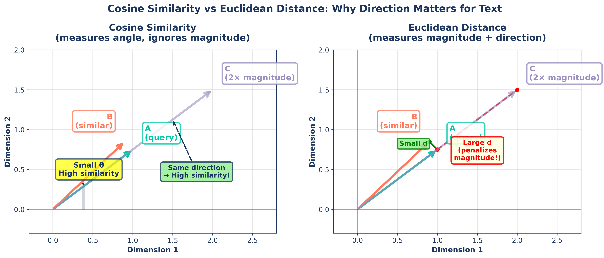
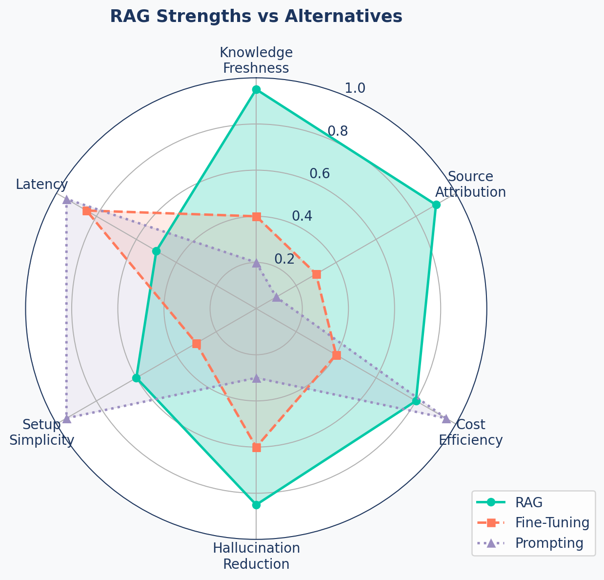
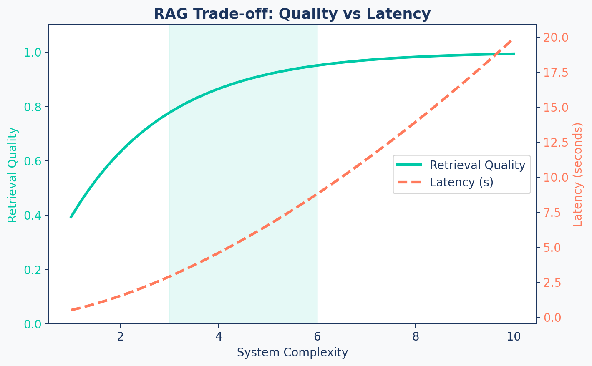

flowchart LR
A[User Query] --> B[Query Embedding]
B --> C[Vector Store<br/>Retrieval]
C --> D[Top-K Context<br/>Chunks]
D --> E[Orchestrator<br/>Formats Prompt]
E --> F[LLM Generator]
F --> G[Answer +<br/>Source Citations]
subgraph "Knowledge Base (Offline)"
H[Raw Documents] --> I[Chunking &<br/>Cleaning]
I --> J[Generate<br/>Embeddings]
J --> K[(Vector Store)]
end
C -.-> K
style A fill:#9B8EC0,stroke:#1C355E,color:#fff
style B fill:#00C9A7,stroke:#1C355E,color:#fff
style C fill:#00C9A7,stroke:#1C355E,color:#fff
style D fill:#00C9A7,stroke:#1C355E,color:#fff
style E fill:#FF7A5C,stroke:#1C355E,color:#fff
style F fill:#FF7A5C,stroke:#1C355E,color:#fff
style G fill:#1C355E,stroke:#1C355E,color:#fff
style H fill:#9B8EC0,stroke:#1C355E,color:#fff
style I fill:#9B8EC0,stroke:#1C355E,color:#fff
style J fill:#9B8EC0,stroke:#1C355E,color:#fff
style K fill:#1C355E,stroke:#1C355E,color:#fff
RAG Architecture & Foundations
RAG Foundations & Data Pipelines — Session 1
2026-02-28
A. The RAG Paradigm
Grounding language models in real knowledge
Agenda
- A. The RAG Paradigm — What RAG is and why it matters
- B. How Retrieval Works — Embeddings and vector similarity
- C. RAG Architecture — The three pillars in action
- D. The Case for RAG — Strengths, limitations, and trade-offs
- E. The Decision Framework — RAG vs fine-tuning vs prompting
- F. Embedding Models — Choosing your engine
The Problem RAG Solves
Without RAG
- LLM knowledge is frozen at training time
- Cannot access private or recent data
- No source attribution — “trust me”
- Hallucinations are undetectable
User → LLM → (best guess)With RAG
- Dynamic, up-to-date knowledge
- Grounded in your documents
- Every claim has a source
- Hallucinations are measurable
User → Retrieve → Augment → GenerateWhy Keyword Search Fails
Scenario: You’re searching YouTube video transcripts for:
“how to fix a bike”
Video 1 ✅
“In this tutorial, I’ll show you how to fix a bike chain that keeps falling off.”
- Result: ✅ Found
- Why: Exact keyword match
Video 2 ❌
“Bicycle repair tutorial: learn to repair a broken chain in 5 minutes.”
- Result: ❌ Missed
- Why: No shared keywords
The Problem
Same idea, different words — keyword search cannot understand that “fix a bike” and “bicycle repair” mean the same thing. This is where embeddings come in.
B. How Retrieval Works
The bridge between language and math
What Are Embeddings?
An embedding is a numerical representation of text — a high-dimensional vector that captures semantic meaning.
Key Properties
- Similar text → nearby vectors
- “Dog” ≈ “Puppy” in vector space
king - man + woman ≈ queen- Meaning encoded as geometry
Why It Matters for RAG
- Query → vector → find similar chunks
- Understands synonyms automatically
- Goes beyond keyword matching
- Foundation of semantic search
Semantic Clusters
Related concepts form tight clusters. Your retriever finds chunks whose vectors are “close” to the query vector.
Vector Arithmetic
Beyond Text: Multimodal Embeddings
Embeddings can represent any data where “similarity” matters:
- Images — Visual similarity and search
- Video — Action and scene recognition
- Audio — Speech patterns and music
- Multimodal (CLIP) — Connecting text to images
- And others …
High-Dimensional Reality
| Aspect | Visualization | Reality |
|---|---|---|
| Dimensions | 2-D scatter plot | 768 – 3072 dimensions |
| Distances | Euclidean on screen | Cosine in practice |
| Clusters | Visually obvious | Exist in high-dim subspaces |
| Precision | Approximate | Exact within model’s capacity |
Key Insight
We visualize in 2-D for intuition, but the real power of embeddings lives in hundreds or thousands of dimensions where subtle semantic distinctions are captured.
Cosine Similarity Explained
Measures the angle between two vectors, not the distance.
\[\text{cosine_sim}(A, B) = \frac{A \cdot B}{\|A\| \times \|B\|}\]
- 1.0 = identical direction (same meaning)
- 0.0 = orthogonal (unrelated)
- -1.0 = opposite direction
Focuses on direction rather than magnitude — a short summary and a long document on the same topic score high.
Cosine vs Euclidean
Why Cosine for Text?
Cosine Similarity
- Ignores vector length
- “Dog” (short) ≈ “Dogs are loyal companions” (long)
- Robust to document length variation
- Standard for embedding APIs
Euclidean Distance
- Penalizes different magnitudes
- Long doc vs short doc = “far apart”
- Better for spatial data (geolocation)
- Requires normalized vectors for text
Bottom Line
For text embeddings, prefer cosine similarity by default. Some models (e.g., OpenAI text-embedding-3) are trained for dot product — check your model’s documentation.
Metrics Cheat Sheet
| Metric | Range | Best For | RAG Default? |
|---|---|---|---|
| Cosine Similarity | [-1, 1] | Text, normalized vectors | Yes |
| Euclidean (L2) | [0, ∞) | Spatial data, images | No |
| Dot Product | (-∞, ∞) | Pre-normalized embeddings | Sometimes |
| Manhattan (L1) | [0, ∞) | Sparse vectors, BM25 | No |
C. RAG Architecture
Bringing it all together
Core Architecture
“The quality of your answers can never exceed the quality of your retrieval.”
D. The Case for RAG
Why RAG dominates enterprise AI
RAG Strengths Radar
DISCLAIMER: This is a conceptual radar chart. The actual values would depend on the specific implementation and use case.
RAG in the Wild
Enterprise Search
- Internal wikis, policy docs, runbooks
- Employees ask in natural language
- Every answer links to the source page
Legal & Compliance
- Contracts, regulations, case law
- Precise citations are non-negotiable
- Auditable reasoning trail
Customer Support
- Product manuals, FAQs, ticket history
- Handles edge cases without retraining
- Escalates when confidence is low
Research Assistants
- Live corpus of papers and reports
- Synthesises across hundreds of docs
- Reproducible with cited passages
Limitations
1. Latency Overhead — Multiple network hops: embed → search → generate. Adds hundreds of ms.
2. Retrieval Dependency — “Garbage in, garbage out.” Wrong chunks → wrong answers.
3. Over-Retrieval — Too many chunks = context dilution, higher cost, confused LLM.
4. The Chunking Problem — Bad splits destroy meaning. Finding optimal strategy is hard.
Trade-off Curve
Sweet Spot
The goal is to stay in the shaded zone — enough complexity for quality, not so much that latency suffers.
E. The Decision Framework
When to choose RAG, fine-tuning, or prompting
Decision Tree
flowchart LR
Start[New AI Feature] --> Q1{Need dynamic/private<br/>knowledge or citations?}
Q1 -- Yes --> RAG[Choose RAG]
Q1 -- No --> Q2{Highly specialized task?<br/>Style, tone, code gen?}
Q2 -- Yes --> Q3{Stable task +<br/>training data available?}
Q3 -- Yes --> FT[Choose Fine-Tuning]
Q3 -- No --> Prompt[Advanced Prompting]
Q2 -- No --> Q4{Simple general task?<br/>No private data?}
Q4 -- Yes --> Prompt
Q4 -- No --> RAG
style RAG fill:#00C9A7,stroke:#1C355E,color:#fff
style FT fill:#FF7A5C,stroke:#1C355E,color:#fff
style Prompt fill:#9B8EC0,stroke:#1C355E,color:#fff
style Start fill:#1C355E,stroke:#1C355E,color:#fff
When to Choose Each
RAG
- Private/dynamic documents
- Source citations required
- Broad knowledge domain
- Frequent data updates
Example: Research assistant, helpdesk
Fine-Tuning
- Change model behavior/style
- Stable, narrow task
- Quality labeled dataset
- Latency-critical path
Example: Brand voice, code gen
Prompting
- Simple, general tasks
- No private data needed
- Prototype in minutes
- Model’s knowledge suffices
Example: Summarization, classification
Quick-Reference Table
| Factor | RAG | Fine-Tuning | Prompting |
|---|---|---|---|
| Knowledge | External, dynamic | Baked into weights | Model’s training data |
| Update Cost | Add docs (cheap) | Retrain (expensive) | Edit prompt (free) |
| Citation | Built-in | Not available | Not available |
| Latency | Higher (retrieval) | Lowest | Low |
| Best For | Knowledge-intensive QA | Style/behavior change | Simple tasks |
Applied: Research Assistant
| Requirement | Analysis | Verdict |
|---|---|---|
| Dynamic/private knowledge? | Yes — growing corpus of PDFs | RAG |
| Source attribution? | Yes — academic citations | RAG |
| Task stable & narrow? | No — open-ended questions | Not fine-tuning |
| Training data available? | No QA pairs | Not fine-tuning |
Verdict
RAG is the clear and necessary choice for our Research Assistant.
F. Embedding Models
Choosing the right engine
The Model Landscape
graph LR
A["Proprietary APIs<br/>(OpenAI, Cohere)"] --> D[Your RAG System]
B["Open Source Local<br/>(MiniLM, BGE, E5)"] --> D
C["Open Source Hosted<br/>(HF Endpoints, Jina)"] --> D
style A fill:#FF7A5C,stroke:#1C355E,color:#fff
style B fill:#00C9A7,stroke:#1C355E,color:#fff
style C fill:#9B8EC0,stroke:#1C355E,color:#fff
style D fill:#1C355E,stroke:#1C355E,color:#fff
Comparison Table
| Type | Examples | Accuracy | Cost | Privacy | Latency |
|---|---|---|---|---|---|
| Proprietary | text-embedding-3-small |
High | Per-token | Data leaves | API-bound |
| Open Local | all-MiniLM-L6-v2, bge-base |
Good | Free | Full control | Hardware-bound |
| Open Hosted | HF Endpoints, Jina | Good | Per-request | Moderate | API-bound |
Our Strategy
Start with OpenAI text-embedding-3-small for development (cheap, fast, reliable). Evaluate open-source models on your data for production cost savings.
Key Takeaways
- RAG = Retrieve + Augment + Generate — ground LLMs in external knowledge
- Three pillars: Retriever (search), Generator (LLM), Orchestrator (glue)
- Use RAG when you need dynamic knowledge, citations, or broad coverage
- Embeddings convert text into vectors that capture semantic meaning
- Cosine similarity is the standard metric for text — direction, not magnitude
- Model choice depends on accuracy needs, budget, and privacy requirements
Up Next
Lab 1: Build the Document Ingestion Pipeline — extracting and cleaning text from PDFs and web pages for our Research Assistant.